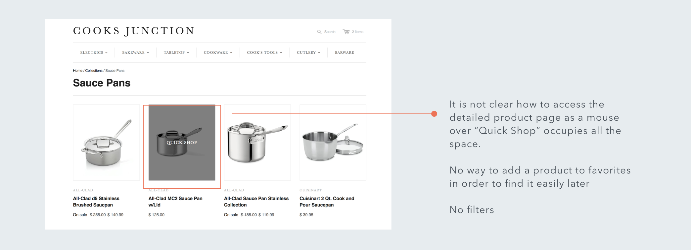
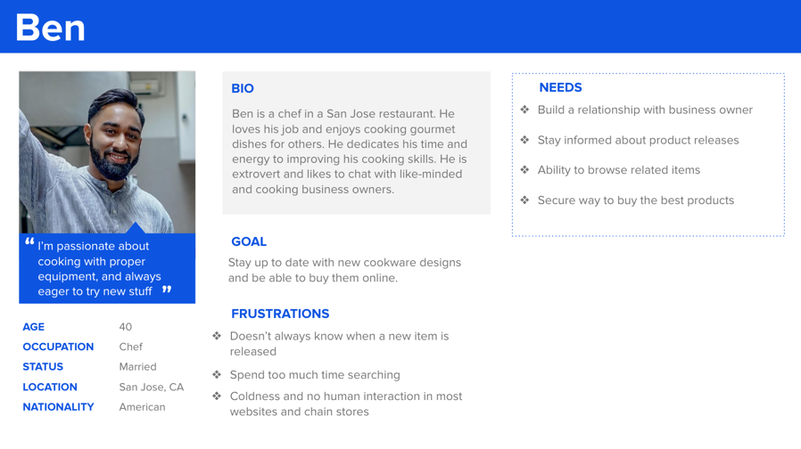
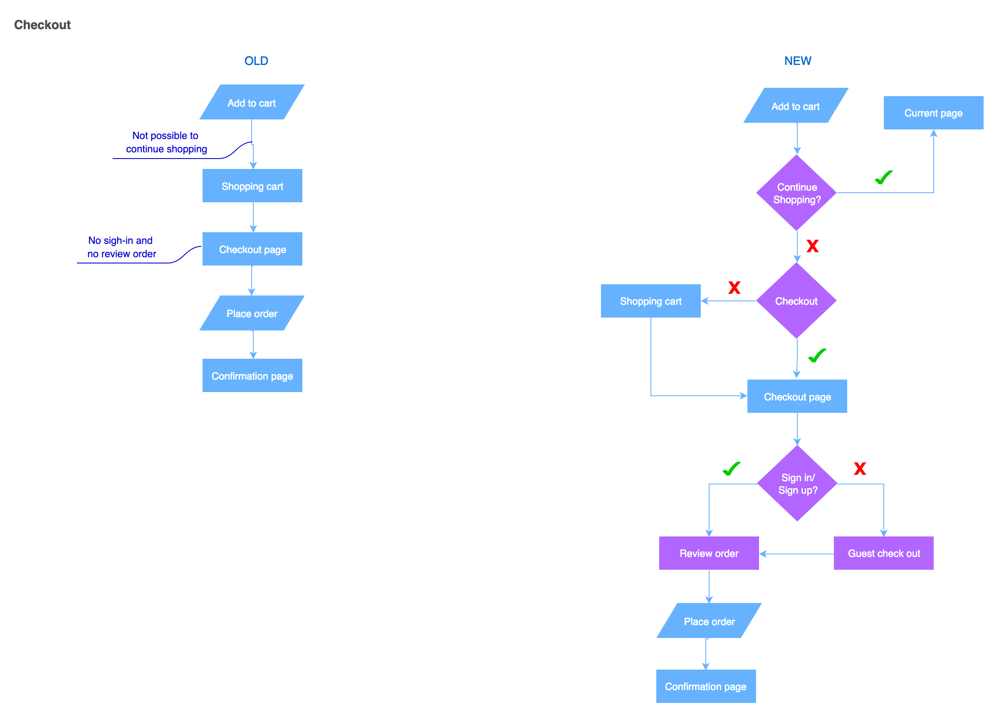
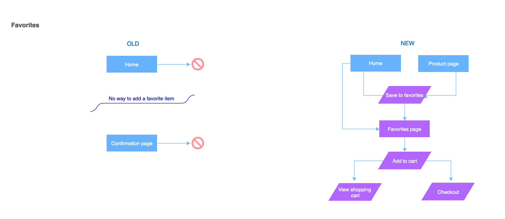

Project Overview
Cooks Junction is a mom & pop boutique shop that has been open for 35 years in Los Altos, CA. They sell a collection of kitchen tools and cookware, and their customers are of diverse background and location, most of them living in the bay area. In recent years, their customers frequentation has lowered due to strong competition from online shopping websites. This project aimed to help them redesign their e-commerce system and re-boost their online market.
TEAM
individual project
SPRINT
9 days
MY ROLE
researcher
UI/UX designer
PLATFORM
website
How it started |
Retail e-commerce is thriving. According to Statista, 40% of internet users in the U.S. claimed that they purchased items online, several times per month. 20% stated that they bought items or services online on a weekly basis. A growing number of people enjoys web shopping. Studying customers behavior and designing according to their needs are very essential to bringing a successful online shopping experience.
|
|
My task |
Redesign and add features to online shopping website to help small business increase revenues from its website. |
Research & Discover
Competitive analysis
I ran a competitive analysis on two competitors - William Sonoma and Crate & Barrel - and noticed there were many features that Cooks Junction was lacking. The cells highlited in deep purple are features that can potentialy be added.
Amazon is too vast to search for products. Users need to know what they want to buy and from which brand in order to find their desired product. Otherwise, Amazon will just provide a long list of items to sort out.Amazon is hurting and killing our business.Store owner
Often times, users don’t know how to navigate among all the results and find what they need. The most popular or the cheapest products may not be what fits their needs.
A smaller scale website will provide a clear list of choices and information that will give the user a clearer and simpler way to choose.
Current website analysis

Synthesize & Define
Personas After talking to the store owner and a few customers, I came up with 3 personas: primary, seconday and a special one.


Problem & Solution
Problem
Traffic on the website is very low due to strong competition.It lacks features compared to others and fails to bring its own signature and appeal in that crowded market.
Solution
Enhance website with new features to match competition, in order to make the buying experience simple, smooth and pleasant.Improve design to leverage the curated nature of its small selection of products.
Ideate & Develop
Card sorting Cooks Junction has a good amount of products, but the way they got organized was very messy, which made it very hard for users to find products. I randomly picked 50 products and wrote them down on cards. I did 2 rounds of card sorting to regroup them and classified them into more logical groups.
Sitemap Card sorting helped me to create simpler, clearer and easier to scan navigation.
User Flows I drew out the old and new user flows of 3 different user journeys and listed the pain points of the old process. The blue color in the new user flows indicates that it's a new added feature.


Design & Deliver
Hi-fi Wireframes I redesigned the whole product discovery and checkout flows, and added features such as: most popular products, theme-based promotion sections, customer loyalty program, pictures showing when hovering, items filter, product dimension/specification/usage and care, recommendation, reviews, guest or member checkout etc.
Homepage
 Hovering menu
Hovering menu
Product filter
 Prodcut detail and add to cart
Prodcut detail and add to cart
Checkout
Review order
Favorite and add to cart
Usability Testing I did 4 usability testings. No user had any roadblocks in finding products and checkout.

Prototype
Prototype